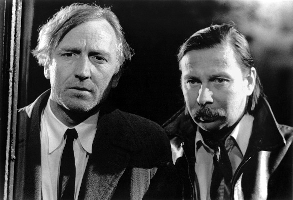

Meine Filme
Darsteller André Wilms 

| 9249 | Bretonische Liebe, Eine | 2017 | 6 | 100 | 1080p | 6.7 / 10 | Drama | |
| 7257 | Deutschland im Herbst | 1978 | 12 | 123 | 1080p | 7.1 / 10 | Drama | |
| 2407 | Le Havre | 2011 | 0 | 93 | 1080p | 7.2 / 10 | Komödie | |
| 4242 | Pause | 2014 | 81 | 1080p | 6.3 / 10 | Komödie | ||
| 3223 | Spurlos | 2010 | 12 | 95 | 1080p | 6.4 / 10 | Thriller |